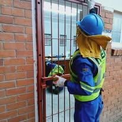
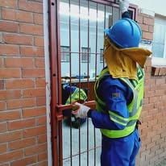

Building & Civils Timeline
- 2016Building RDP houses in Burgersdorp.
- 2023Site offices at Burgersdorp Prison Upgrade.
- 2023Civils foundations at Burgersdorp Police facilities.
About Us
Established in 2015 in Burgersdorp, MEI Trading and Projects is a dynamic construction company devoted to excellence, integrity and precision across paving, civils and building.
To deliver top-quality services that fully meet client requirements every time, fostering growth through professional integrity and a proven track record of success.
To be recognized as a premier construction firm synonymous with innovation, reliability, and exceptional project execution.
At Mei Trading and Projects we are a dynamic and reliable team, dedicated to the following principles:
The MEI Trading & Projects team — skilled, safety-focused and committed to quality, on every site and every project.
Our people are our greatest strength. From site agents and operators to general workers and support staff, every person plays a critical role in delivering on our promises. We invest in ongoing training, mentorship, PPE and quality equipment so our teams can perform at their best while maintaining a strong safety culture. Our supervisors lead by example, ensuring method statements are followed, risks are assessed before work begins, and toolbox talks keep everyone aligned. We value collaboration, clear communication and respect on site, creating a working environment where people take pride in their work and clients can trust the results we deliver.
Director
MEI Trading & Projects (PTY) LTD is led by founder and director, Mr Thando Mei, whose vision is to build quality infrastructure while uplifting people and communities.
Mr Thando Mei is the visionary founder and director of MEI Trading and Projects. Since establishing the company in 2015, he has guided it with unwavering integrity, a deep commitment to quality workmanship and industry-leading expertise. Under his leadership, the company has grown from a small local contractor into a trusted partner on a range of civil, paving and building projects.
His leadership style cultivates a work environment focused on creativity, continuous learning and safety – making MEI Trading and Projects a preferred partner and employer in the region. Driven by a mission to exceed client expectations and foster community growth, he leads by example, empowers his teams and insists on high standards on every site, no matter the size of the project.
“As the director of MEI Trading and Projects, I lead with integrity, precision and a genuine commitment to client satisfaction. I believe in open communication and personally monitoring our projects to ensure our standards are met and that clients always understand where we are in the process.
I am passionate about creating a culture of continuous improvement where safety, skill development and teamwork are always at the forefront. My goal is to build lasting relationships with our clients, earn their trust over time and deliver innovative, reliable solutions on every job – from the first site visit to final handover.”
Projects
From municipal infrastructure upgrades to renovations and paving works, MEI Trading has delivered projects that support communities across the Eastern Cape and beyond.
Major projects completed
Years of experience
Paving and surfaces delivered
Municipal & corporate clients
Our Services
Each card represents a core MEI Trading service. Hover on desktop or tap on mobile to reveal more detail about what we do.
Gallery
Real photos of MEI crews, paving works, civil construction and maintenance projects.


 


At MEI Trading, our commitment to excellence is matched by our unwavering dedication to giving back. Over the years we have had the privilege of supporting a diverse range of beneficiaries, including football teams, schools, churches and many other private contributions – each playing a vital role in our community.
By extending a helping hand and sharing our resources, we strive to uplift those around us and foster a spirit of collaboration and care. Our social responsibility efforts reflect not just our business values, but our genuine belief in making a meaningful difference wherever we operate.
Accreditations
MEI Trading & Projects maintains key registrations, memberships and compliance documents so that clients can engage us with confidence.
Companies and Intellectual Property Commission.
Registration No: 201511504407
CIDB Contractor Registration Service.
CIDB CRS: 10075816
National Treasury Central Supplier Database (CSD).
CSD No: MAAA00030728
Registered and tax compliant with the South African Revenue Service.
Compliant with the Compensation for Occupational Injuries and Diseases Act.
Affiliate of the Master Builders Association (where applicable).
Contact Us
Reach out to discuss your project, request a quotation or schedule a site visit.
You can also connect with us on Facebook to see updates, social projects and recent construction work.
Visit us at 11 Geyer Street, Burgersdorp, 9744 or reach out instantly via WhatsApp, Facebook or our website. Tap a button below to connect.
Social Responsibility
Investing back into the communities we serve.
MEI Trading believes in building more than infrastructure – we also build people, opportunity and hope.